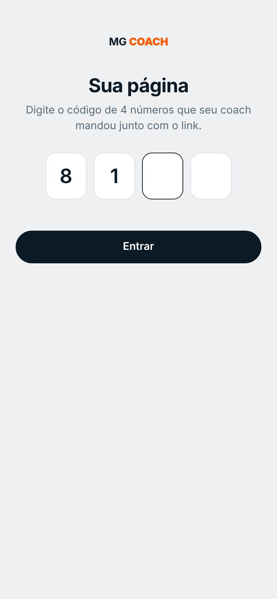
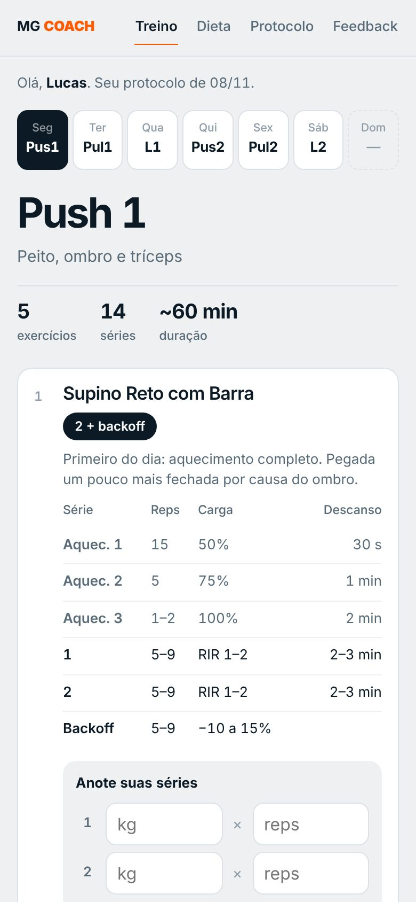
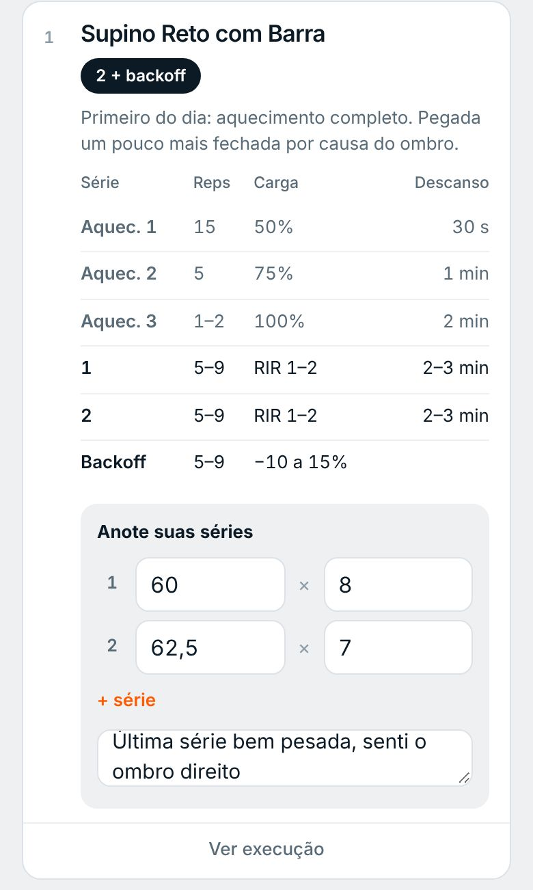
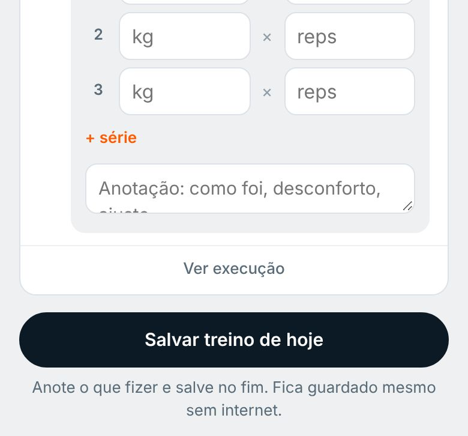
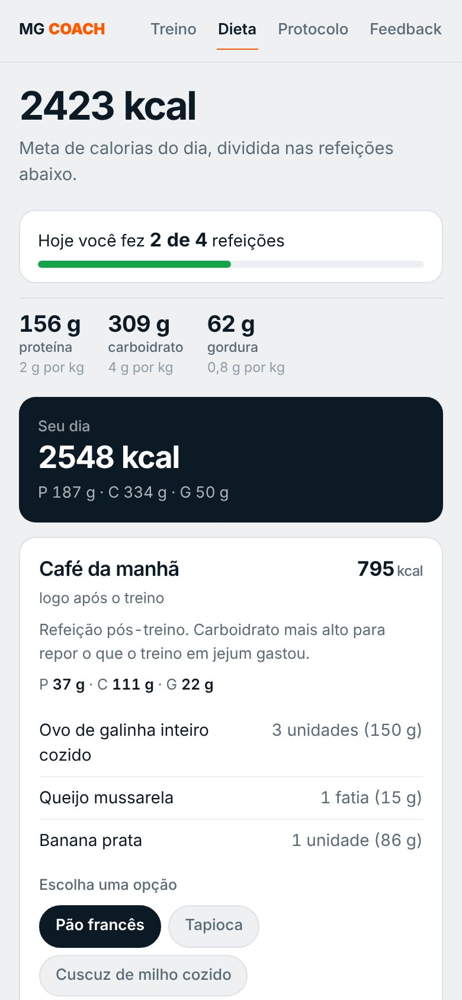
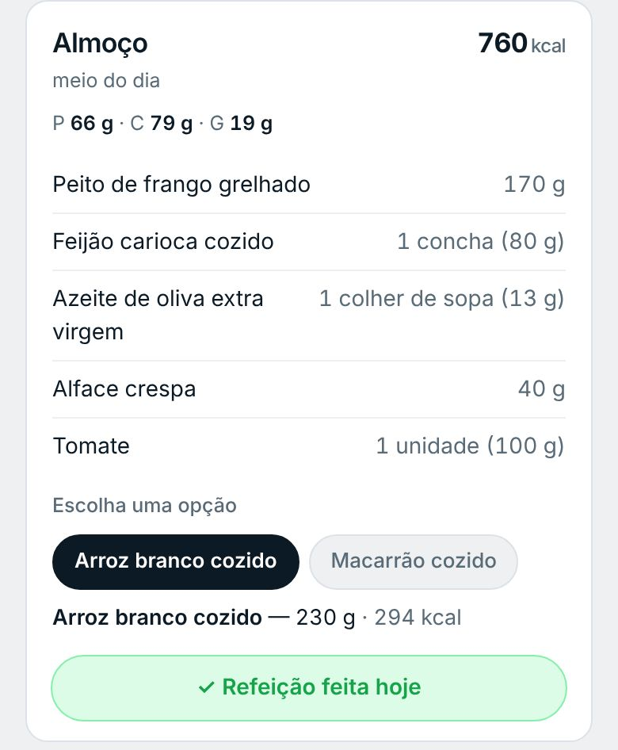
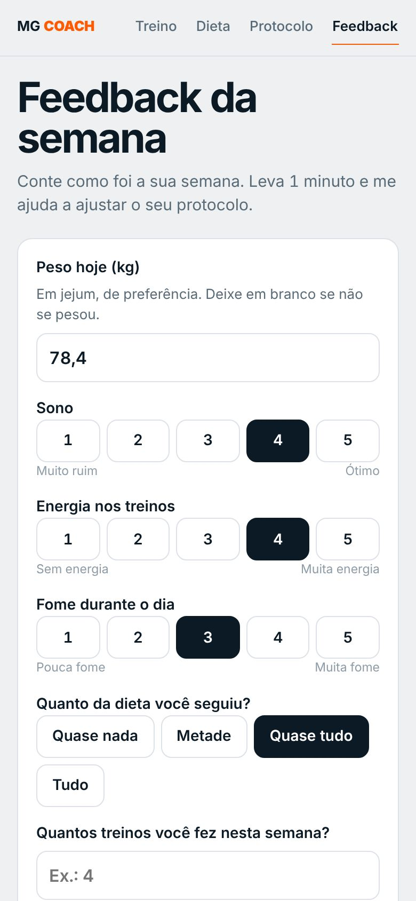
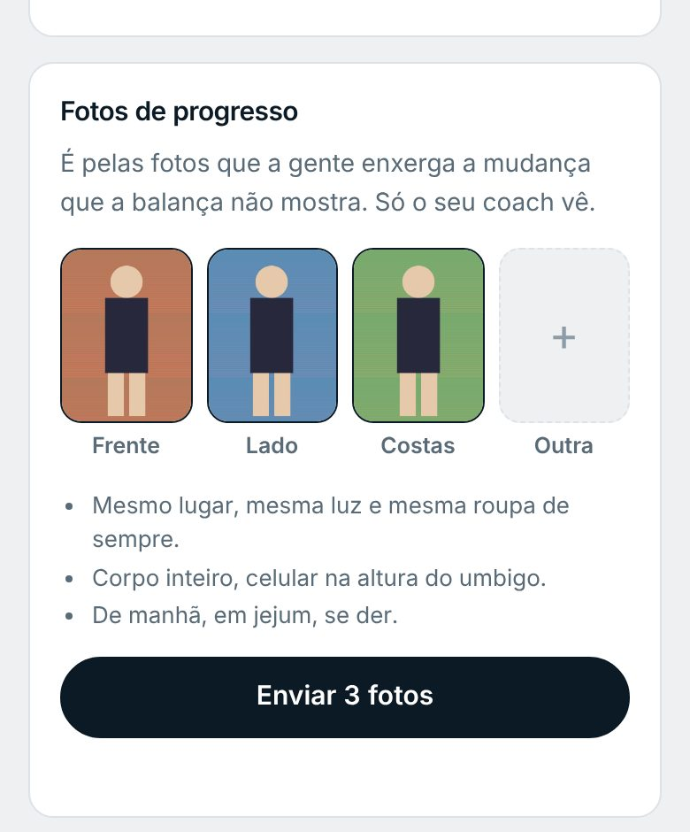

Primeiro acesso
Abra o link que eu mandei no WhatsApp e digite o código de 4 números que veio junto. É só uma vez em cada celular.

- ✓O link é só seuNão compartilhe. Ele abre o seu treino, a sua dieta e os seus registros.
- ✓Esqueceu o código?Me chame no WhatsApp que eu mando de novo.
- ✓Abriu dentro do WhatsApp ou do Instagram?Toque nos três pontinhos e escolha abrir no Safari (iPhone) ou no Chrome (Android). Assim dá para colocar na tela inicial.
Coloque na tela inicial
Assim ele abre como um aplicativo, com ícone próprio, em tela cheia e sem precisar procurar o link.
- Abra o link no SafariPrecisa ser o Safari, o navegador da bússola azul.
- Toque em CompartilharO quadrado com a seta para cima, na barra de baixo. Se não aparecer, toque em ⋯ e depois em Compartilhar.
- Adicionar à Tela de InícioRole a lista para baixo até achar essa opção e toque em Adicionar.
- Abra pelo ícone MG COACHNa primeira vez pelo ícone, digite o código de novo. Depois ele lembra.
- Abra o link no ChromeO navegador colorido do Google.
- Toque nos três pontinhos ⋮No canto de cima, à direita.
- Adicionar à tela inicialEm alguns celulares aparece como Instalar app. Confirme em Adicionar.
- Abra pelo ícone MG COACHEle fica junto com os seus outros aplicativos.
Treino
O app já abre no treino de hoje. Cada exercício mostra o que fazer, como fazer e onde anotar.

123- 1Dias da semanaToque no dia para ver o treino dele. O dia de hoje já vem marcado.
- 2Treino do diaO nome, o foco, quantos exercícios e séries e quanto tempo dura.
- 3O que fazer em cada exercícioAquecimento, séries, repetições, carga ou RIR e descanso, em ordem.

456- 4Anote suas sériesA carga em kg e quantas repetições você fez em cada série válida. Fez uma série a mais? Toque em + série.
- 5AnotaçãoSentiu algum desconforto, trocou a máquina, achou leve demais? Escreva aqui. Eu leio.
- 6Ver execuçãoVídeo com o movimento certo e o passo a passo.

7- 7Salvar treino de hojeNo fim do treino, toque aqui. O que você anotou vem para mim. Esqueceu algo? Corrija e salve de novo.
- ✓Na próxima vezAparece a carga da última vez em cada exercício, para você saber de onde partir.
- ✓Treina sem internet?Pode anotar normalmente. Fica guardado no celular e chega para mim quando a internet voltar.
Por que anotar as cargas?
Para ganhar músculo e força, o corpo precisa de um estímulo que aumenta aos poucos: um pouco mais de carga ou uma repetição a mais com a mesma carga. Sem anotar, fica no achismo.
- Você sabe exatamente de onde partir em cada série.
- Eu vejo se você está evoluindo, onde travou e quando é hora de mudar o treino.
- As anotações me mostram desconfortos antes que virem um problema.
Dieta
Seu plano do dia, com as quantidades e as opções de troca.

123- 1Meta do diaAs calorias do dia e quanto de proteína, carboidrato e gordura.
- 2Refeições feitas hojeQuantas refeições você já marcou hoje, de quantas tem no plano.
- 3RefeiçõesO que comer, quanto e em que horário. Onde aparece Escolha uma opção, toque para trocar o alimento.

4- 4Marcar como feita hojeComeu a refeição? Toque no botão no fim dela. Ele fica verde e vem para mim.
- ✓Seja sinceroMarque só o que fez de verdade. É assim que eu consigo ajustar a dieta para a sua rotina, em vez de mudar no escuro.
Feedback da semana
Uma vez por semana, no mesmo dia, me conte como foi. Leva 1 minuto.

12- 1PesoDe manhã, em jejum, depois de ir ao banheiro. Sempre do mesmo jeito.
- 2Sono, energia e fomeToque de 1 a 5. Mais embaixo: quanto da dieta seguiu, quantos treinos fez, dores e um comentário livre.
- ✓Para que servePeso, sono, fome e energia juntos me mostram se o plano está funcionando ou se é hora de ajustar calorias, treino ou rotina.
Fotos de progresso
Ficam no fim da aba Feedback. Mande quando eu pedir, em geral a cada 3 ou 4 semanas. Só eu vejo.

- 1Frente, lado e costasToque em cada quadro para tirar a foto na hora ou escolher da galeria. Depois toque em Enviar fotos.
- 2Sempre do mesmo jeitoMesmo lugar, mesma luz e mesma roupa. Corpo inteiro, com o celular na altura do umbigo. De manhã, em jejum, se der.
- ✓Para que serveA foto mostra a mudança que a balança não mostra. Comparando as datas lado a lado, eu vejo o que evoluiu e ajusto o plano.
Protocolo
As orientações do seu plano: como ler o treino, aquecimento, intensidade, hidratação e rotina. Volte aqui sempre que tiver dúvida.
Tudo chega para mim
Você anota, eu acompanho e ajusto. Quando eu mudar o seu treino ou a sua dieta, o app atualiza sozinho.
Dúvidas rápidas
Troquei de celular. E agora?
Abra o mesmo link e digite o código. Seu treino, sua dieta e as cargas anteriores continuam lá.
Esqueci de salvar o treino.
O que você digitou fica guardado no celular durante o dia. Abra o app e toque em Salvar treino de hoje.
Apareceu “código mudou”.
Por segurança eu posso trocar o seu código. Me chame no WhatsApp que eu mando o novo.
O vídeo do exercício não abre.
Os vídeos precisam de internet. Com sinal fraco, espere carregar ou assista antes de ir para o treino.